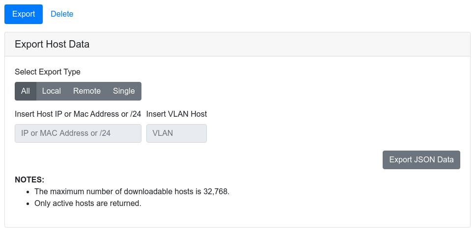
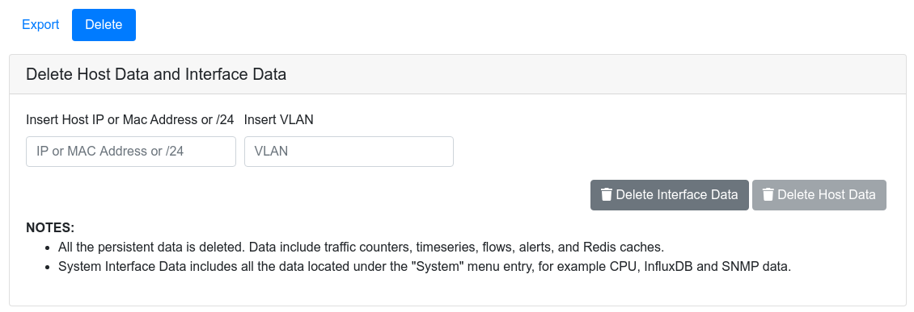

Manage Data
Through the manage data page it is possible to export or delete the interface data.

The Export Data Page
It is possible to choose between the following options:
Export all the hosts data
Export all the local hosts data
Export all the remote hosts data
Export a specific host data, by specifying its IP or MAC address and optionally a VLAN
The JSON data can be downloaded and easily analyzed.

The Delete Data Page
The Delete tab is similar to the export tab. It provides a convenient way to delete all the data associated to a particular host or group of hosts (via a /24 network CIDR). It is also possible to delete all the data associated to the active interface.
The Manage Data page is accessible when a non system interface is selected. On the system interface, the delete data functionality can be directly accessed via the Settings menu. In this case, it is possible to:
Delete the system interface data
Delete the inactive interfaces data. This can be very useful to free some disk space for old interfaces.